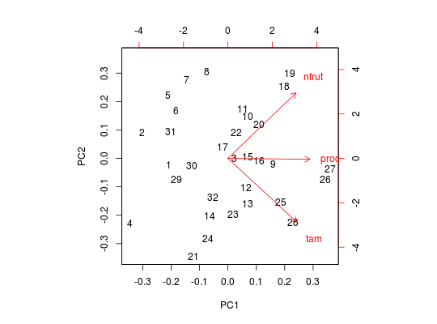

Os dados referem-se à avaliação de uma cultivar de melão em 32 unidades experimentais.
data.frame com 32 observações e 3 variáveis, em que
nfrutprodtamFERREIRA (2011), Exercício 3.8.5, pág. 169.
data(FerreiraEx3.8.5)#> Warning: data set ‘FerreiraEx3.8.5’ not foundstr(FerreiraEx3.8.5)#> 'data.frame': 32 obs. of 3 variables: #> $ nfrut: int 26250 28750 35000 13750 41250 38750 46250 50000 40000 41250 ... #> $ prod : int 28701 16113 47943 19366 9873 17005 12862 18159 56300 53921 ... #> $ tam : num 7 6.1 8.2 7.3 6.7 6.9 6.9 7.2 9.3 7.5 ...# Análise descritiva panel.density <- function(x, ...) { usr <- par("usr") on.exit(par(usr)) par(usr = c(usr[1:2], 0, 1.5)) par(new = TRUE) plot(density(x), xlab = "", ylab = "", main = "", lwd = 2) } pairs(FerreiraEx3.8.5, pch = 20, diag.panel = panel.density)# Análise de componentes principais (PCA) (comp <- prcomp(FerreiraEx3.8.5, scale = TRUE))#> Standard deviations: #> [1] 1.2645037 0.9104156 0.7564217 #> #> Rotation: #> PC1 PC2 PC3 #> nfrut 0.5368240 0.716908622 0.4448168 #> prod 0.6454758 -0.009471919 -0.7637220 #> tam 0.5433056 -0.697102798 0.4678319screeplot(comp, type = "lines")biplot(comp)